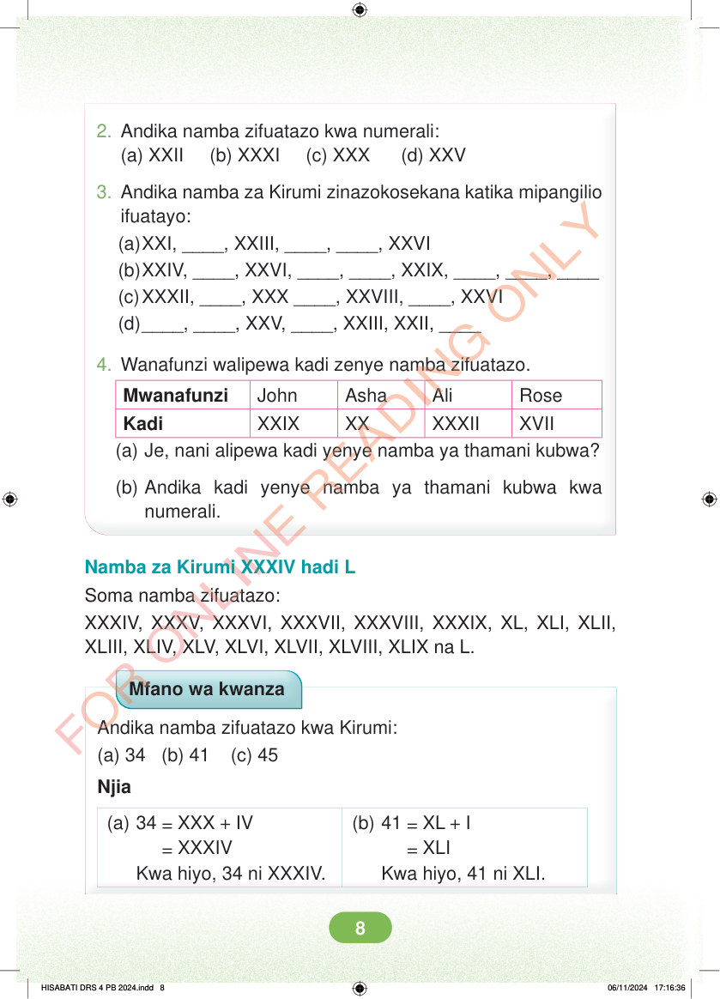

<!DOCTYPE html>
<html lang="sw-TZ"><head><meta charset="utf-8"><meta name="viewport" content="width=device-width,initial-scale=1">
<title>Hisabati: Kitabu cha Mwanafunzi Darasa la Nne</title>
<meta name="title-id" content="pg014_sec001"><meta name="page-section-id" content="14">
<link href="./content/tailwind_output.css" rel="stylesheet"><link href="./assets/libs/fontawesome/css/all.min.css" rel="stylesheet"><link href="./assets/fonts.css" rel="stylesheet">
<style>body{margin:0;background:#eef1ed}main{width:100%;display:flex;justify-content:center;padding:1rem 1rem 5rem;box-sizing:border-box}#content{width:100%;display:flex;justify-content:center}.pdf-page{position:relative;width:min(calc(100vw - 2rem),56rem);aspect-ratio:540.8980102539062/750.6610107421875;background:white;box-shadow:0 4px 24px #0002;overflow:hidden}.pdf-page img{position:absolute;inset:0;width:100%;height:100%;object-fit:fill}</style>
</head><body><main><h1 class="sr-only" id="page-heading">Ukurasa wa 14</h1><div id="content" class="opacity-0"><section role="article" data-section-type="pdf_accessible_page" data-section-id="pg014_sec001" aria-labelledby="page-heading" class="pdf-page"><p class="sr-only" data-id="pg014_gp001_tx001">2. Andika namba zifuatazo kwa numerali: (a) XXII (b) XXXI (c) XXX (d) XXV 3. Andika namba za Kirumi zinazokosekana katika mipangilio ifuatayo: (a) XXI, ____, XXIII, ____, ____, XXVI (b) XXIV, ____, XXVI, ____, ____, XXIX, ____, ____, ____ (c) XXXII, ____, XXX ____, XXVIII, ____, XXVI (d) ____, ____, XXV, ____, XXIII, XXII, ____ 4. Wanafunzi walipewa kadi zenye namba zifuatazo. Mwanafunzi John Asha Ali Rose Kadi XXIX XX XXXII XVII (a) Je, nani alipewa kadi yenye namba ya thamani kubwa? (b) Andika kadi yenye namba ya thamani kubwa kwa numerali. Namba za Kirumi XXXIV hadi L Soma namba zifuatazo: XXXIV, XXXV, XXXVI, XXXVII, XXXVIII, XXXIX, XL, XLI, XLII, XLIII, XLIV, XLV, XLVI, XLVII, XLVIII, XLIX na L. Mfano wa kwanza Andika namba zifuatazo kwa Kirumi: (a) 34 (b) 41 (c) 45 Njia (a) 34 = XXX + IV (b) 41 = XL + I = XXXIV Kwa hiyo, 34 ni XXXIV. = XLI Kwa hiyo, 41 ni XLI. HISABATI DRS 4 PB 2024.indd 8 HISABATI DRS 4 PB 2024.indd 8 06/11/2024 17:16:36 06/11/2024 17:16:36</p></section></div></main><div class="relative z-50" id="interface-container"></div><div class="relative z-50" id="nav-container"></div><script src="./assets/offline-preloader.js?v=audiofix-20260824-1"></script><script src="./assets/scorm.js"></script><script src="./assets/base.bundle.local.js?v=audiofix-20260824-1"></script></body></html>